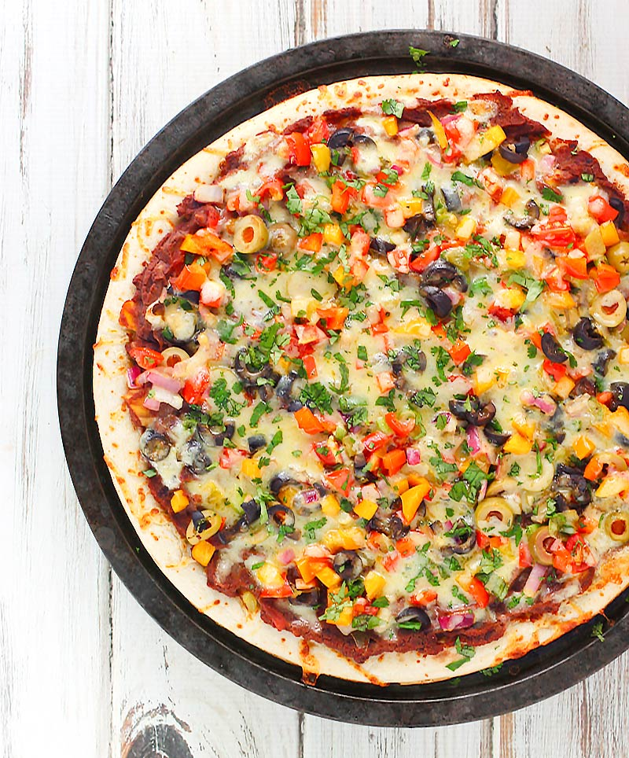

Mexican Pizza

Ingredients
- 1 pizza dough (store-bought or homemade)
- 1/2 cup refried beans
- 1/2 cup salsa
- 1 cup shredded Mexican cheese blend
- 1/4 cup sliced black olives
- 1/4 cup diced bell peppers (any color)
- 1/4 cup diced onions
- 1/4 cup sliced jalapenos (optional)
- 1/4 cup chopped cilantro
Instructions
- Preheat oven to 475°F (245°C). Place a pizza stone or baking sheet in the oven while it preheats.
- Roll out the pizza dough on a lightly floured surface to your desired thickness.
- Spread refried beans evenly over the dough, leaving a small border around the edges.
- Spread salsa over the refried beans.
- Sprinkle shredded Mexican cheese blend over the salsa.
- Top with sliced black olives, diced bell peppers, diced onions, and sliced jalapenos, if using.
- Bake for 10-15 minutes, or until the crust is golden brown and the cheese is bubbly and melted.
- Remove from the oven and let cool slightly before slicing.
- Garnish with chopped cilantro.
- Serve hot and enjoy your delicious Mexican Pizza!
Enjoy your pizza!